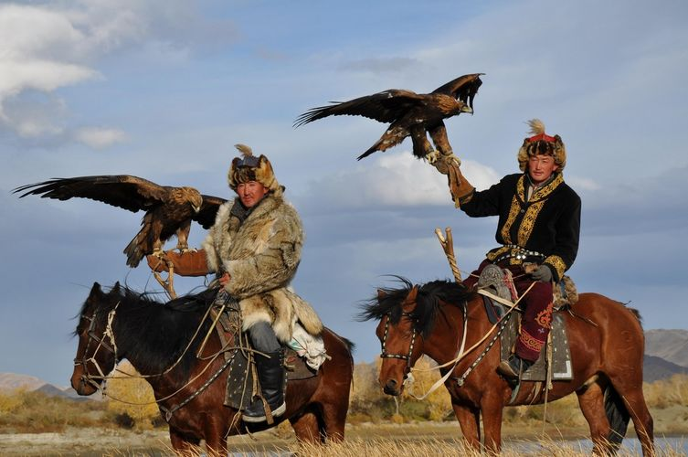
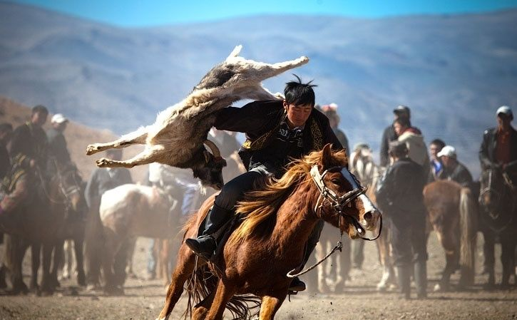
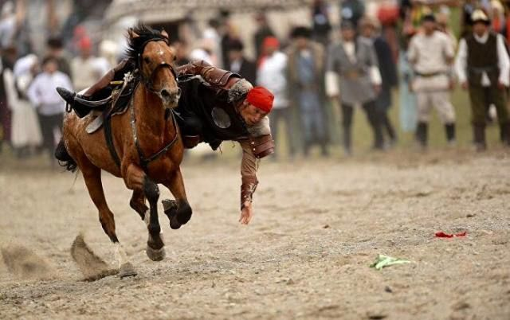
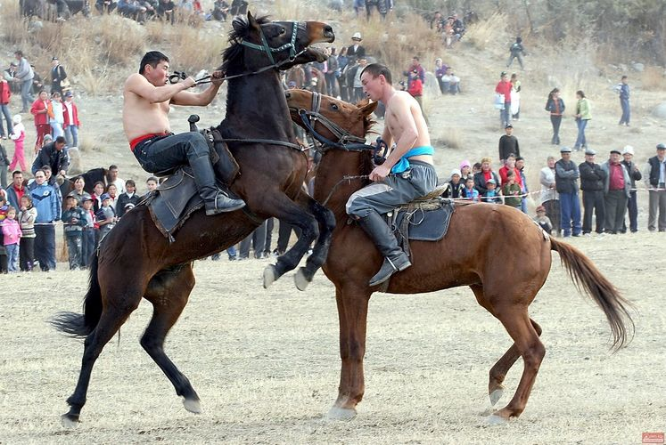
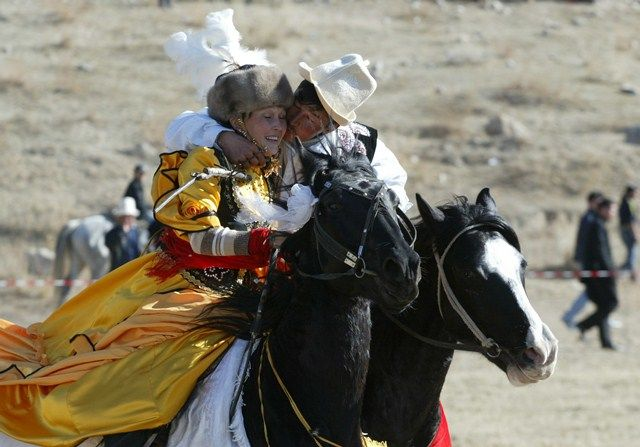
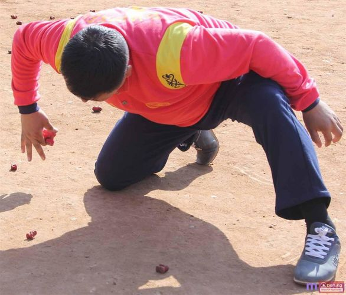
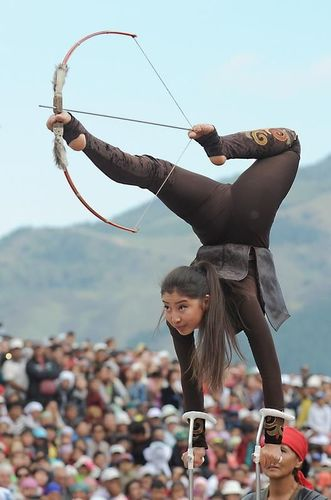
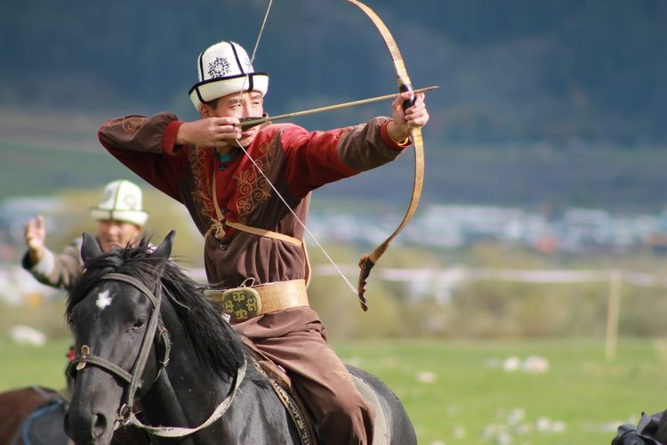

Байыркы салт монголдордун Орто Азияга жортуулу учурунда жакшы бүркүт менен күлүк ат бирдей баалуу болуп, ээсине бийлик берген. Убакыттын өтүшү менен бул салт акырындык менен жоюлса да, Кыргызстандын айрым аймактарында канаттууларга аңчылык кылуу дагы эле популярдуу. Ал атайын үйрөтүлгөн ат үстүндө өтөт. Чабандес бүркүттү кармай алышы үчүн ээрге колду көтөрүүчү атайын «балдак» аспабы тагылат. Алар көбүнчө жаш кийиктерге, түлкүлөргө жана майда жаныбарларга аңчылык кылышат. Аңчылык учурунда бүркүт ылдый түшүп, чагылгандай ылдамдык менен аларды өлтүрөт. Кээде канаттуулар жапайы жердегидей эки-экиден аңчылык кылышат.

Алтын бүркүттөр олжосун кармаганда сейрек учурашат, адатта, күчтүү тырмактары менен моюнду сындырып өлтүрүшөт. Аңчылык мезгили октябрда башталып, февраль айында бүтөт. Ошентип, туристтик сезондо бул искусствону көрсөтүү чектелген. Бирок, «Салбурун» деп аталган жырткыч канаттуулар менен иттер менен татаал мергенчилик оюндары бар.
Бул өзгөчө оюндун тарыхы кылымдарга барып такалат. Үйүр-үйүр мал кышы-жайы ачык асман алдында жайылып жүргөн. Карышкырлар көбүнчө малга кол салчу. Ок атуучу куралдардын жоктугунан малчылар жырткычтар менен жеринде күрөшө алышкан эмес. Ошондуктан ат үстүндө карышкырды жарым өлгүчө кууп жетип, таяк менен чаап, камчы чаап, жерден көтөрүп, бири-бирин сабап салышкан.

Кийинчерээк отурукташкан жашоо образына өтүп, көк бөрү улак тартышка – ат оюндарынын улуттук түрүнө айланган, мында чабандестер текенин өлүгү үчүн күрөшкөн.
Бул ат минүү түрлөрүнүн бири болуп саналат. Чабандес чуркоодо жерден тыйындарды алышы керек. Оюндун шарты боюнча 100 метр аралыкта тыйындар түз сызык менен тешикке тизилет, анын тереңдиги байгенин баасына жараша болот. Сыйлык канчалык баалуу болсо, тешик ошончолук терең жана тыйынды көтөрүү мүмкүнчүлүгү азыраак болот. Чабандес чуркоодо жерден тыйындарды алышы керек. Оюндун шарты боюнча 100 метр аралыкта тыйындар түз сызык менен тешикке тизилет, анын тереңдиги байгенин баасына жараша болот. Сыйлык канчалык баалуу болсо, тешик ошончолук тереңирээк жана тыйынды көтөрүү мүмкүнчүлүгү ошончолук азыраак болот.

Жеңиш эң аз аракетте көп тыйын алып, аралыкты тезирээк басып өткөн адамга берилет.
Кыргыз элиндеги мелдештин байыркы түрү. Ар кандай күрөштөй эле салмак категориясы боюнча топтолгон 19 жаштан жогорку курактагы эркектерге катышууга уруксат берилет. Жөнөкөй күрөштөн негизги айырмасы – күрөш ат үстүндө өткөрүлөт. Чабандестер 15 мүнөттүн ичинде душманды аттан түшүрүшү керек. Ат менен кошо таштоого да уруксат берилет.

Эгерде ушул убакыттан кийин катышуучулардын бири да атаандашын жеңбесе, үч мүнөттүк тыныгуудан кийин 5 мүнөт кошумча убакыт берилет. Эгерде андан кийин жеңүүчүнү аныктоо мүмкүн болбосо, анда “чүчү кулак” жарыяланат же упайлар эсептелет. Таза жеңиш күрөш учурунда атаандашын аттан жулуп алган же жыгылган адамга берилет.
Байыркы замандан бери бул оюн үйлөнүү үлпөтүнүн салтына айланган. Оюндун шарты боюнча келинге мыкты ат берилип, биринчи болуп жарышка түшкөн. Күйөө бала сүйүктүүсүнүн артынан чуркап, аны аялдыкка алуу ниетинин чынчылдыгын далилдеди. Кызды кууп жетпесе да той өтпөй калган. Оюнчулар орун алмашып, эми кыз атчынын артынан камчы менен чаап баратат.

Учурда бул салттуу элдик оюн көбүнчө майрамдарда, жайлоодо же ипподромдордо өткөрүлөт.
Көптөр алчики оюнун билишет. Ал үчүн 16-20 сөөктү (48-60 даана) алышат. Бир алчы «хан» болуп дайындалат. «Хан» элден өзгөчөлөнүү үчүн алар көбүнчө чоңураак алчыкты алып, ачык түскө боёшот.
Биринчи сокку “ханга” берилет. Эгерде оюнчу бутага тийсе, оюн уланат. Ийгиликсиз болсо, жылыш башкага өтөт. Соккуларды ошол эле позициядагы алчылар аткарышат.

Чабылган алчыкты «ок» (ок), тийгени «кийик» (оюн) деп аталат. Сокку бир гана, көбүнчө сөөмөйү менен берилет. Оюнду баштап, «ханды» кулаткандан кийин, оюнчу аны бош колуна кармайт же өзүнчө жайгаштырат («хан» менен алчикти бир үймөккө салууга болбойт).
Бул балким эң укмуштуудай улуттук оюн. Бүткүл дүйнөлүк көчмөндөр оюндарында кыргыз сулуулары жаанын жибин бутунун манжалары менен тартып атканы эсиңиздеби? Эгерде мурда жаа мергенчилик жана үйдү коргоо үчүн колдонулса, азыр көңүл ачуу үчүн колдонулат.

Улуу басып алуучулар Атилла менен Чыңгыз хандын ат жаачылары дүрбөлөңгө түшүп, ошол кездеги эң чоң империялардын – Римдин, Кытайдын, немецтердин жана арабдардын аскерлерин качырууга жөнөтүшөт. Ок атуу боюнча мелдештер көп. Жаа тартыш эң кеңири таралган түрлөрүнүн бири. Оюндун эрежелери жөнөкөй: ар бир жарышта чабандестер үч бутаны атышы керек – бирөө аларга каратылып, бир бутага капталга жана экинчиси атчынын алыс жагына. Акыркы учурда артына ок атууга аргасыз болот.
